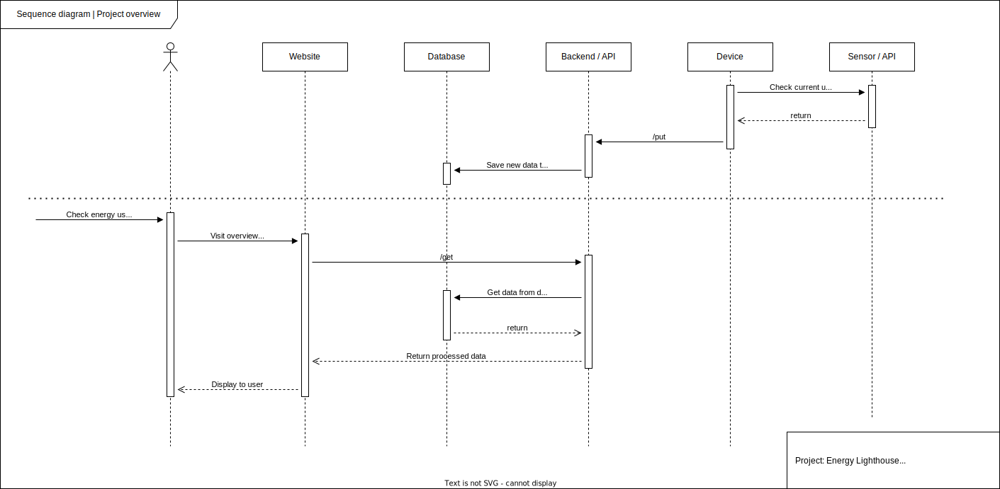

About
Ampere helps users keep better track of their own electricity consumption. Paying attention to one’s own electricity consumption is becoming increasingly important.
In recent years, the cost of providing electricity to German households has risen noticeably. New, established technologies such as heat pumps and e-mobility have high energy requirements. The structural change towards renewable energies also requires individuals to deal responsibly with electricity as a resource. Electricity meters in households are usually hardly visible and the values they display provide little concrete information about one’s own usage behavior.
Ampere gives users a differentiated picture of their consumption. The energy supplier provides the device. Smart home devices and digitally networked electricity meters collect the data. The device displays time periods between the current daily electricity consumption to the consumption of the current year. More detailed data and a consumption history are shown in the Ampere App on a smartphone. Personalized tips and tricks are displayed based on the consumption data as a guide. To set up Ampere, users first enter a target value. The levels continuously show whether the user meets or exceeds this target value in the time period. The display is discreet, always present and can be read quickly. This is how Ampere motivates users to optimize their electricity needs.
Projektaufbau
